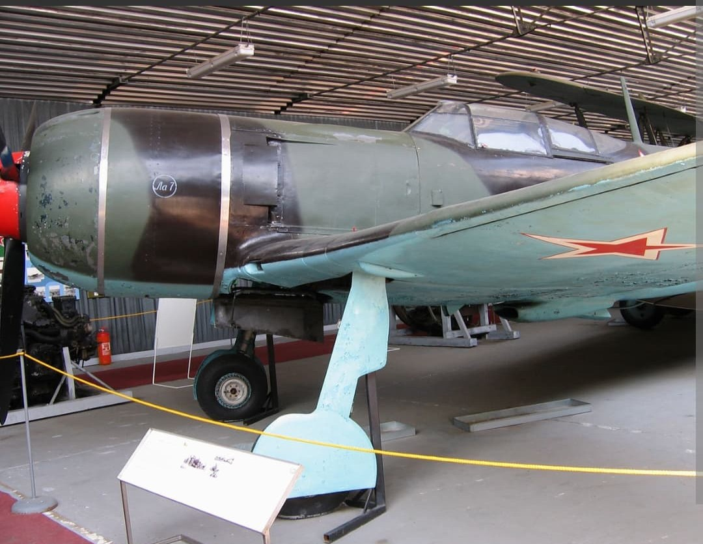
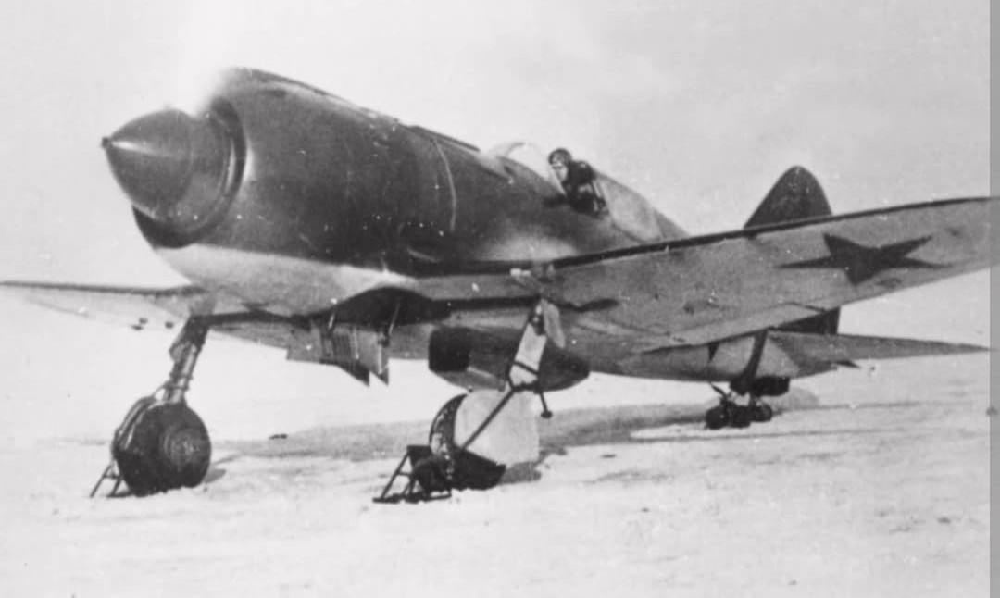
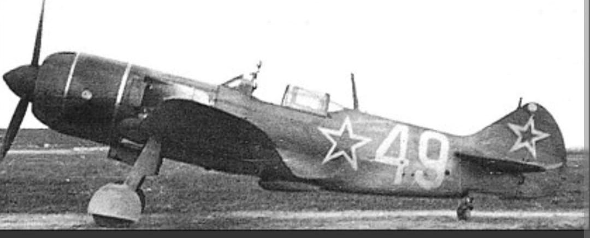

L'aboutissement ultime de la série Lavochkin : redoutable, ultra-rapide et destructeur de jachères aériennes

Le Lavochkin La-7 est un avion de chasse monoplace soviétique entré en service au printemps 1944. Évolution directe du célèbre La-5FN, le La-7 représente le sommet du développement des chasseurs à piston à moteur en étoile développés par l'Union soviétique durant la Seconde Guerre mondiale.
Grâce à un affinement aérodynamique poussé et à une structure allégée par l'introduction de longerons en duralumin, le La-7 surclassait à basse altitude pratiquement tous les chasseurs allemands contemporains, y compris les Focke-Wulf Fw 190 et les Messerschmitt Bf 109K. Il s'est même offert le luxe de descendre un chasseur à réaction Messerschmitt Me 262 en combat aérien.
Spécifications de référence du Lavochkin La-7 (version de série de 1944) :

Pour concevoir le La-7, Semion Lavochkine et les ingénieurs du TsAGI (Institut central d'aérohydrodynamique) ont procédé à une révision méthodique de la cellule du La-5FN afin de gagner de précieuses dizaines de kilomètres-heure :

Le La-7 est indissociable de la figure emblématique d'Ivan Kojedoub, le triple Héros de l'Union soviétique et premier as allié de la guerre. C'est à bord de son La-7 personnel (portant le numéro « 27 ») qu'il remporta 17 de ses 62 victoires, dont le fameux Messerschmitt Me 262 à réaction abattu le 19 février 1945 au-dessus de la Oder.
Appareil redouté par la Luftwaffe durant la bataille de Berlin, le La-7 assura une couverture aérienne hermétique au-dessus des colonnes de blindés soviétiques déferlant sur la capitale du Reich en mai 1945.
Page du Musée HOP WW2 – Lavochkin La-7